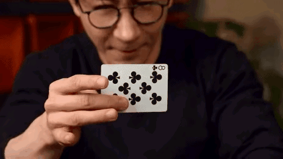
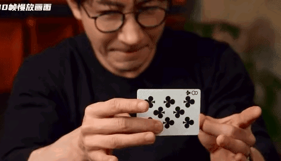

刘谦这么牛……//@Apache9:这手速//@huangyi1979://@互联网的那点事:手速这么快？//@shijin1://@灵感之源://@时蝇喜箭 :厉害了 //@宝玉xp ://@一个动态类型的幽灵 :这是人类的手速吗？//@冈瓦纳 :原理太简单，但看清了后更觉得厉害。那张牌翻到后面后和前面一张重叠的太好了@小琦趣摘:见证奇迹的时刻还是败给了1000帧慢放的机器 

 //@huangyi1979://@互联网的那点事:手速这么快？
//@huangyi1979://@互联网的那点事:手速这么快？ //@shijin1://@灵感之源://@时蝇喜箭 :厉害了 //@宝玉xp ://@一个动态类型的幽灵 :这是人类的手速吗？
//@shijin1://@灵感之源://@时蝇喜箭 :厉害了 //@宝玉xp ://@一个动态类型的幽灵 :这是人类的手速吗？ //@冈瓦纳 :原理太简单，但看清了后更觉得厉害。那张牌翻到后面后和前面一张重叠的太好了
//@冈瓦纳 :原理太简单，但看清了后更觉得厉害。那张牌翻到后面后和前面一张重叠的太好了